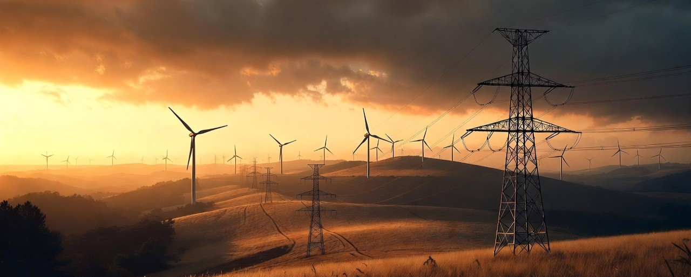

Wie setzen sich die Strompreise zusammen? Eine kritische Betrachtung

Werden wir abgezockt? Der tiefe Griff ins Portemonnaie
13.04.2026
Die hohen Strompreise in Deutschland gehören seit Jahren zu den drückendsten Belastungen für Haushalte und Unternehmen. Im April 2026 zahlen viele Verbraucher weiterhin zwischen 31 und 37 Cent pro Kilowattstunde, bei Bestandskunden und in der Grundversorgung sogar noch deutlich mehr. Das wirft Fragen auf: Wie kann das sein, obwohl Wind und Sonne angeblich kostenlosen Strom liefern und der Ausbau der Erneuerbaren energisch vorangetrieben wurde? Die Antwort findet sich nicht allein in den Windrädern oder Solaranlagen auf den Dächern und Feldern. Sie liegt sehr viel tiefer. Denn neben den enormen logistischen Kosten, die die Netzumgestaltung mit sich bringt, also der Ausbau von Stromspeichern und Transportwege durch das ganze Land, liegt die Antwort vor allem auch in der Funktionsweise des Strommarktes und in einer Reihe politischer Weichenstellungen, die das System teurer und anfälliger gemacht haben.
Am Strommarkt, etwa an der EPEX Spot in Leipzig, werden die verfügbaren Kraftwerke stündlich nach ihren variablen Grenzkosten sortiert – von den günstigsten zu den teuersten. Die preiswertesten Anlagen laufen dabei immer zuerst, um die Nachfrage zu decken. Der entscheidende Punkt aber ist: Der Preis, den alle zahlen, wird immer vom teuersten Kraftwerk bestimmt, das gerade noch benötigt wird, um den Bedarf zu decken. Dieses sogenannte "Merit-Order-Prinzip" sieht auf den ersten Blick vielleicht im Detail effizient und marktwirtschaftlich aus. Es belohnt günstige Erzeugung und sorgt dafür, dass der Strombedarf mit den niedrigsten möglichen Kosten gedeckt wird – aber nur solange ausreichend preiswerte Grundlast vorhanden ist. Genau diese Grundlast hat Deutschland jedoch in den vergangenen Jahren massiv reduziert.
Bis 2022 versorgten die letzten verbliebenen Kernkraftwerke das Land mit planbarem, zuverlässigem Strom zu niedrigen Grenzkosten von etwa fünf bis zehn Euro pro Megawattstunde. Diese Anlagen liefen stabil, unabhängig von Wetter oder Tageszeit, und drückten den gesamten Marktpreis nach unten. Politisch gewollt wurden die letzten drei Reaktoren jedoch Ende 2022 abgeschaltet. Seitdem fehlt diese günstige, CO₂-arme Basiserzeugung vollständig. Die Lücke musste also anderweitig geschlossen werden, und das hat Folgen bis heute.
Hinzu kam dann noch der Verlust günstigen Erdgases aus Russland. Nord Stream 2 sollte Deutschland langfristig stabil und preiswert mit Pipeline-Gas versorgen. Doch nach dem Anschlag auf die Leitungen im Herbst 2022 explodierten die Gaspreise förmlich. Statt der früher üblichen 20 bis 30 Euro pro Megawattstunde mussten teure LNG-Lieferungen aus den USA, Katar und anderen Ländern herangeschafft werden – oft zu Preisen von 100 Euro und mehr. Gaskraftwerke, die früher nur in Spitzenzeiten zum Einsatz kamen, rückten nun häufiger in die Position des preissetzenden Kraftwerks in der Merit Order.
Hier zeigt sich das Perfide des Systems: Selbst wenn an sonnigen und windigen Tagen sechzig Prozent oder mehr des Stroms aus Erneuerbaren stammen, deren Grenzkosten zumindest auf dem Papier nahe null liegen, bestimmt bei Flaute oder hoher Nachfrage dennoch oft ein maßlos übertrieben teures Gaskraftwerk den Preis für die gesamte Stunde. Alle Verbraucher – ob sie gerade Wind- oder Solarstrom nutzen oder nicht – zahlen dann den hohen Gas-basierten Preis. Das Merit-Order-Prinzip verteilt die Kosten nicht nach Herkunft, sondern einheitlich. Was auf dem Papier also effizient wirkt, wird in der Praxis zu einer echten Belastung, wenn die günstigen Grundlastquellen fehlen.
Selbst bei allem drehen und wenden, beim Herausreden und Schönreden, sprechen die nackten Zahlen eine deutliche Sprache. In Deutschland lagen die Haushaltsstrompreise Anfang 2026 im Durchschnitt bei rund 37 Cent pro Kilowattstunde, Neukundentarife bewegen sich je nach Anbieter zwischen etwa 27 und 32 Cent. Zum Vergleich: In Frankreich, wo etwa siebzig Prozent des Stroms aus der Atomkraft kommen, sind die Preise auf dem Terminmarkt oft nur ein Bruchteil davon – teilweise ein Viertel oder weniger. Der Unterschied ist nicht allein dem Wetter oder der Geografie geschuldet, sondern den unterschiedlichen Energiemixen und den damit verbundenen Systemkosten.
Denn die Erneuerbaren bringen neben den niedrigen Grenzkosten, erhebliche Zusatzkosten mit sich. Der Ausbau von Wind- und Solaranlagen erfordert einen massiven Netzausbau, um den schwankenden Strom von Nord- und Ostsee oder aus ländlichen Regionen in die Verbrauchszentren zu transportieren. Bei Überproduktion muss Strom manchmal abgeregelt oder ins Ausland exportiert werden, bei Unterproduktion springen Reservekraftwerke ein. Diese Redispatch-Maßnahmen und die Vorhaltung von Backup-Kapazitäten – vor allem Gaskraftwerke, die nur selten laufen – werden über die Netzentgelte und andere Umlagen auf alle Verbraucher umgelegt. Die Auktionspreise für neue Wind- und Solarparks sehen auf dem Papier attraktiv aus. Die realen Systemkosten für den Bürger und die Industrie fallen jedoch höher aus als jemals zuvor.
Das Ergebnis ist keine klassische Energiewende im Sinne günstiger, sicherer und sauberer Versorgung. Stattdessen hat eine Kette von Entscheidungen die preiswertesten und planbarsten Energiequellen – Kernkraft und günstiges Pipeline-Gas – systematisch aus dem Markt gedrängt oder verhindert. Sanktionen und geopolitische Entwicklungen haben darüber hinaus gar nicht richtig den russischen Lieferanten getroffen, sondern vor allem die deutsche Wirtschaft und die Verbraucher. Die Energieversorgung ist teurer, instabiler und abhängiger von Importen geworden als in früheren Jahrzehnten. Und der Bürger zahlt die Zeche, sei es über die Stromrechnung, höhere Produktpreise oder Steuern, die die Subventionen für Erneuerbare und Netze finanzieren und zusätzlich stützen.
Man kann darüber streiten, ob dies in erster Linie Klimaschutz ist oder ob andere politische Ziele eine Rolle spielen. Jedenfalls hat die Kombination aus Merit-Order-Prinzip und dem gezielten Abbau günstiger Kapazitäten zu den höchsten Energiekosten in der deutschen Nachkriegsgeschichte geführt. Profitiert haben vor allem Importeure von teurem Flüssiggas, Betreiber von Reservekraftwerken und jene Branchen, die von den umfangreichen Subventionen für die „grüne“ Transformation leben. Die Industrie leidet unter Wettbewerbsnachteilen gegenüber Ländern mit stabileren und günstigeren Strompreisen, und viele Haushalte spüren die Belastung direkt im Portemonnaie.
Das Merit-Order-Prinzip an sich ist vielleicht nicht unbedingt der Feind. Es kann in einem ausgewogenen Mix mit ausreichend günstiger Grundlast möglicherweise effizient funktionieren. Das eigentliche Problem entsteht erst, wenn man es mit einer Realität kombiniert, in der die günstigsten Erzeugungsformen politisch eliminiert wurden. Solange diese Fehlentscheidungen der letzten anderthalb Jahrzehnte nicht grundlegend aufgearbeitet und das Marktdesign an die neue Situation angepasst wird, dürfte sich an den hohen Preisen wenig ändern. Eine ehrliche Debatte über die tatsächlichen Kosten der Energiewende und mögliche Korrekturen wäre überfällig – im Interesse von Verbrauchern, Wirtschaft und Versorgungssicherheit. Denn günstige und zuverlässige Energie ist keine Nebensache. Sie ist die Grundlage für Wohlstand und Lebensqualität in einem modernen Industrieland.
Vielen Dank fürs lesen.
YouTube GedankenwerkTV <- Folge uns auch auf Youtube!
YouTube GedankenwerkTV <- Folge uns auch auf Youtube!
YouTube GedankenwerkTV <- Folge uns auch auf Youtube!
Weiterführende Links:
- https://www.bdew.de/media/documents/Pub_20220907_Merit_Order.pdf – Klare, verständliche Broschüre des BDEW, die das Merit-Order-Prinzip, die Preisbildung am Spotmarkt und den Unterschied zwischen Termin- und Spotmarkt erklärt.
- https://www.destatis.de/DE/Presse/Pressemitteilungen/2026/03/PD26_073_43312.html – Offizielle Statistik des Statistischen Bundesamts mit dem genauen Anteil erneuerbarer Energien an der inländischen Stromerzeugung 2025
- https://strom-report.com/strompreise-europa/ – Übersichtlicher Vergleich der Haushaltsstrompreise in der EU, der zeigt, dass Deutschland deutlich teurer ist als Frankreich (ca. 26–27 ct/kWh) und der EU-Durchschnitt.
- https://www.energy-charts.info/charts/price_spot_market/chart.htm?l=de&c=DE – Interaktive Grafiken zu Stromerzeugung, EE-Anteil und Spotmarktpreise